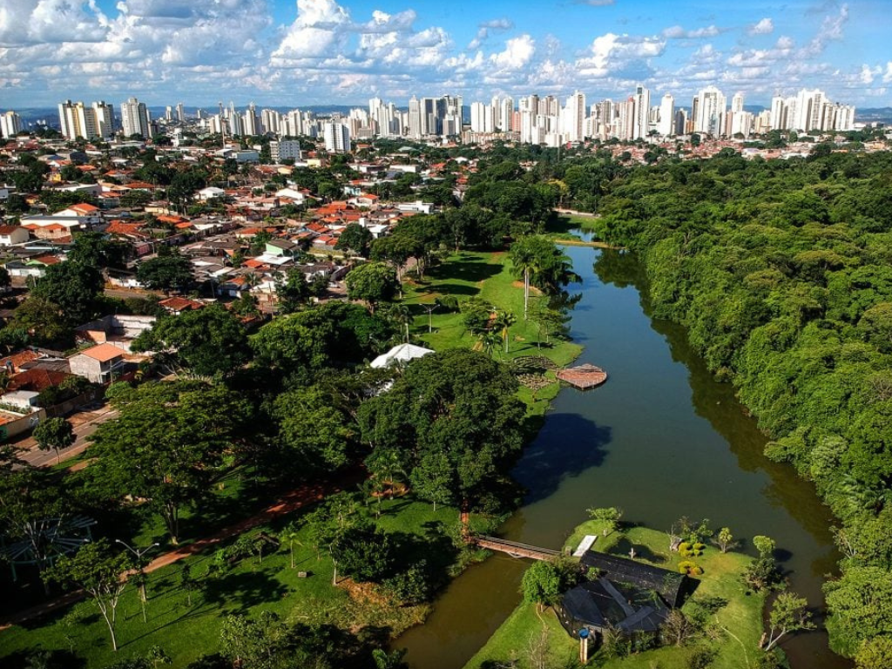

O estado de Goiás está localizado na região Centro-Oeste do país e possui grande importância econômica, especialmente no agronegócio, com destaque para a produção de soja, milho e criação de gado. Sua capital, Goiânia, é um importante centro urbano e cultural. Goiás também se destaca por suas belezas naturais, como o Parque Nacional da Chapada dos Veadeiros, famoso por suas cachoeiras e paisagens do cerrado, além de cidades históricas como Pirenópolis, que preserva a arquitetura colonial e tradições culturais.

Voltar